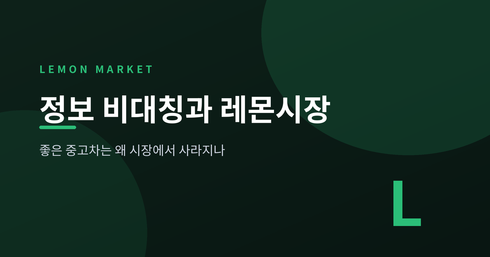
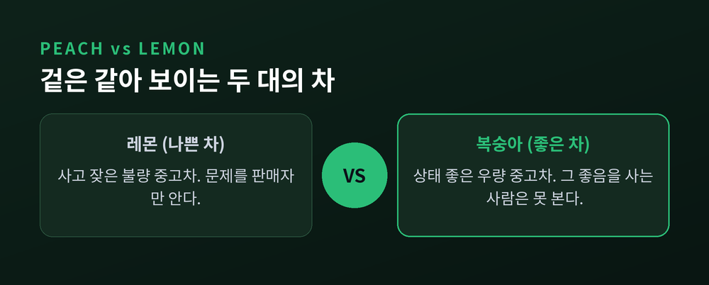
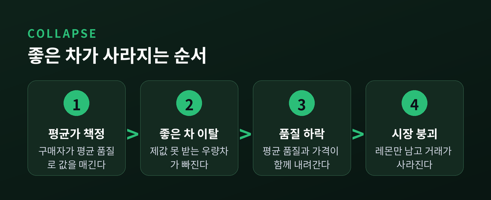
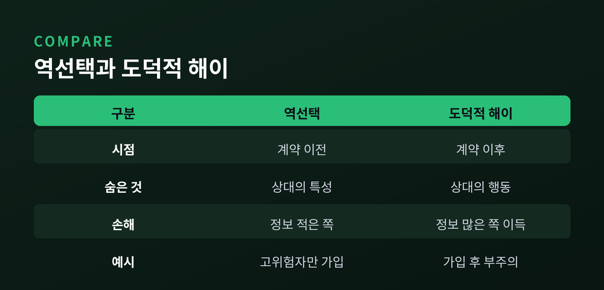
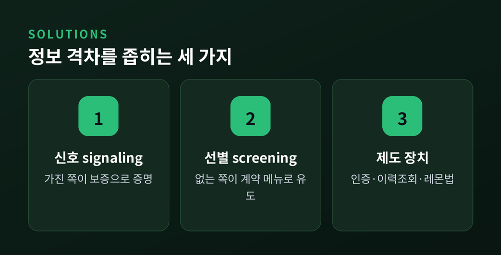
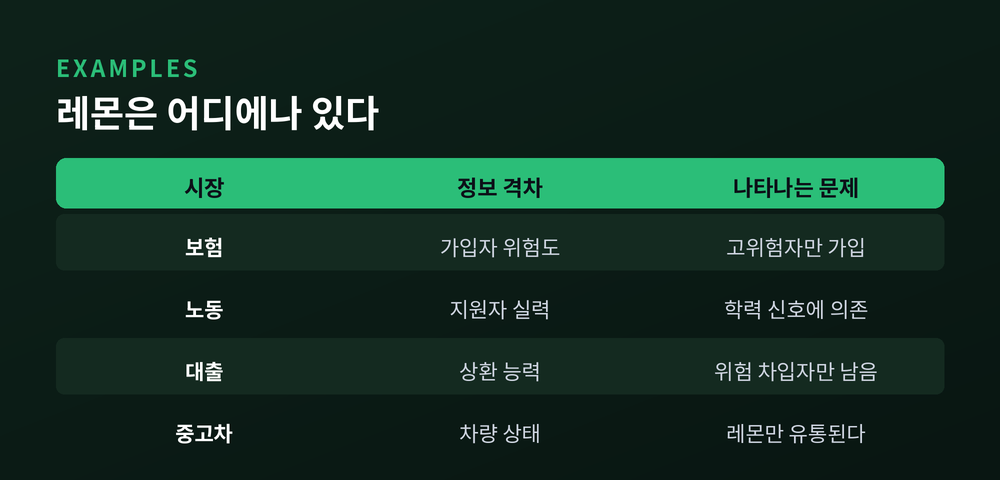

3줄 요약
· 판매자와 구매자가 아는 정보가 다르면(정보 비대칭), 구매자는 평균 품질을 기준으로 값을 매깁니다. 그 순간 좋은 물건의 주인이 시장을 떠납니다.
· 조지 애컬로프는 1970년 논문에서 이 현상을 중고차 시장으로 설명했고, "좋은 차가 나쁜 차에 밀려나는" 역선택의 논리를 밝혔습니다.
· 해결의 열쇠는 정보 격차를 줄이는 것 — 보증·인증·이력조회 같은 신호(signaling)와 선별(screening)입니다.
이번 글에서는 경제학에서 가장 유명한 비유 중 하나인 '레몬시장'을 정리해 보겠습니다. 좋은 중고차를 팔려던 사람이 왜 결국 차를 거둬들이는지, 그 조용한 시장 붕괴의 논리를 따라가 봅니다.

영어권에서 '레몬(lemon)'은 겉은 멀쩡한데 사고 나면 계속 말썽을 부리는 불량 중고차를 뜻합니다. 반대로 상태가 좋은 차는 '복숭아(peach)'라고 부릅니다.
문제는 이 둘을 겉만 봐서는 구별하기 어렵다는 데 있습니다.
차를 파는 사람은 그 차가 레몬인지 복숭아인지 압니다. 사고 이력도, 잔고장의 버릇도 이미 겪어봤기 때문입니다. 그러나 사는 사람은 알 수 없습니다. 며칠 몰아보기 전까지는 겉모습과 판매자의 말이 전부입니다.
이렇게 거래 당사자 한쪽이 다른 쪽보다 훨씬 많은 정보를 쥐고 있는 상태를 정보 비대칭(asymmetric information)이라고 합니다. 레몬시장의 모든 이야기는 여기서 출발합니다.

이 통찰을 처음 이론으로 세운 사람이 경제학자 조지 애컬로프입니다.
그는 1970년 논문 "The Market for 'Lemons'"에서 중고차 시장을 예로 들어, 정보 비대칭이 어떻게 시장 자체를 망가뜨리는지 보였습니다. 정보경제학이라는 분야의 문을 연 글입니다.
흥미로운 것은 이 논문의 초반 운명입니다. 애컬로프는 세 곳의 학술지에서 게재를 거절당했습니다. 두 곳은 "너무 사소하다"고 했고, 한 곳은 "이 논문이 옳다면 경제학이 달라져야 할 것"이라며 오히려 틀렸다고 판단했습니다.
네 번째로 문을 두드린 학술지에서야 실렸습니다. 그리고 "경제학이 달라져야 한다"던 그 거절 사유는, 31년 뒤 정확히 현실이 됩니다.
역선택(adverse selection)이 어떻게 작동하는지, 설명을 위해 간단한 숫자를 가정해 보겠습니다. 아래 값은 개념을 보여주기 위한 예시입니다.
구매자가 매기는 가치가 이렇다고 합시다.
구매자는 어느 쪽인지 구별할 수 없으니, 평균을 기준으로 값을 매깁니다. (3,000 × 0.5) + (1,000 × 0.5) = 2,000달러. 딱 여기까지가 구매자가 낼 수 있는 최대 금액입니다.
그런데 좋은 차 주인의 생각은 다릅니다. "내 차는 3,000달러짜리인데 2,000달러엔 못 팔지." 그는 차를 거둬들입니다.
좋은 차가 빠지면 시장의 평균 품질이 내려갑니다. 그러면 구매자가 내려는 평균가도 더 떨어집니다. 남아 있던 그나마 나은 차의 주인도 다시 이탈합니다.
이 고리가 반복됩니다. 좋은 차가 한 대씩 빠져나가고, 남는 것은 레몬뿐입니다. 극단적으로는 거래 자체가 사라지며 시장이 붕괴합니다. 좋은 물건이 나쁜 물건에 밀려나는, 이른바 '악화가 양화를 구축하는' 장면입니다.

정보 비대칭이 낳는 문제는 두 가지로 나뉩니다. 둘을 섞어 쓰기 쉬우니 짚고 넘어가겠습니다.
역선택은 계약 '이전'의 문제입니다. 감춰진 것은 상대방의 '특성'입니다. 좋은 차인지 나쁜 차인지, 저위험자인지 고위험자인지 — 그 숨은 유형 때문에 정보를 덜 가진 쪽이 손해 보는 선택을 하게 됩니다.
도덕적 해이는 계약 '이후'의 문제입니다. 감춰진 것은 상대방의 '행동'입니다. 보험에 든 뒤 부주의해지는 것, 이 경우가 여기에 해당합니다.
한 줄로 정리하면 이렇습니다. 도덕적 해이는 정보를 더 가진 쪽이 그 비대칭을 이용해 이득을 취하는 것이고, 역선택은 정보를 덜 가진 쪽이 그 비대칭 탓에 원하는 선택을 하지 못하는 것입니다.

애컬로프의 문제 제기는 두 명의 경제학자에 의해 해법으로 이어졌습니다.
2001년 노벨경제학상은 애컬로프, 마이클 스펜스, 조지프 스티글리츠 세 사람에게 돌아갔습니다. 수상 사유는 "정보 비대칭이 있는 시장에 대한 분석"이었습니다. 애컬로프가 문제(역선택)를 밝혔다면, 스펜스는 신호(signaling)를, 스티글리츠는 선별(screening)이라는 해법을 제시했습니다.
신호는 정보를 가진 쪽이 스스로를 증명하는 방법입니다. 스펜스는 노동시장에서 교육이 능력의 신호로 쓰인다고 봤습니다. 기업은 지원자의 실제 능력을 볼 수 없으니 학력으로 짐작합니다. 중고차라면 판매자가 거는 '보증'이 신호입니다. 좋은 차 주인은 고장 위험이 낮아 보증을 걸어도 부담이 작지만, 레몬 주인은 그 비용이 커서 함부로 흉내 내지 못합니다.
선별은 정보가 없는 쪽이 상대의 정보를 끌어내는 방법입니다. 스티글리츠는 보험사가 계약 메뉴를 제시하는 방식을 예로 들었습니다. "자기부담금이 높은 대신 보험료가 싼 상품"과 "자기부담금이 낮은 대신 보험료가 비싼 상품"을 함께 내놓으면, 저위험자와 고위험자가 스스로 다른 상품을 고릅니다. 상대가 알아서 유형을 드러내는 셈입니다.

레몬시장의 논리는 중고차에만 머물지 않습니다.
보험시장에서는 사고 위험이 높은 사람일수록 보험에 적극적으로 가입하려 합니다. 위험이 낮은 사람은 발을 뺍니다. 보험료를 올리면 안전한 가입자가 먼저 떠나고, 위험한 가입자만 남는 악순환이 이어집니다.
노동시장에서는 고용주가 지원자의 진짜 실력을 알 수 없어 학력과 자격증이라는 신호에 기댑니다.
대출시장에서는 은행이 차입자의 상환 능력을 알기 어렵습니다. 금리를 올리면 성실한 차입자가 빠지고 위험한 차입자만 남습니다. 그래서 신용평가와 담보, 신용위험분석이 선별 장치로 작동합니다.
현실의 중고차 시장도 손 놓고 있지는 않습니다. 딜러의 평판, 정밀 점검을 거친 인증 중고차, 사고와 주행거리를 확인해 주는 이력조회 서비스, 그리고 반복되는 하자에 교환·환불을 요구할 수 있게 한 이른바 '레몬법'까지. 모두 정보 격차를 좁혀 좋은 차가 살아남게 하려는 장치입니다.

정리하면 이렇습니다. 레몬시장이 우리에게 남기는 교훈은 가격이 전부가 아니라는 점입니다. 아무리 좋은 물건이라도, 그 좋음을 상대가 믿을 수 없다면 제값을 받지 못하고 조용히 시장을 떠납니다.
그래서 시장이 제대로 돌아가려면 물건의 품질만큼이나 믿을 수 있는 정보가 필요합니다. 보증서 한 장, 이력서 한 줄, 인증 마크 하나가 하는 일이 바로 그것입니다.
좋은 차가 사라지지 않는 시장을 원하신다면, 먼저 물어야 할 것은 가격이 아니라 신뢰일지도 모릅니다.